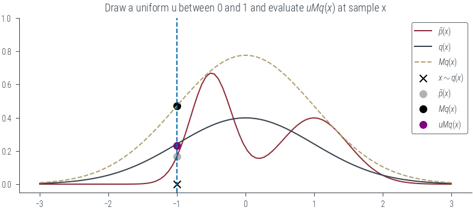
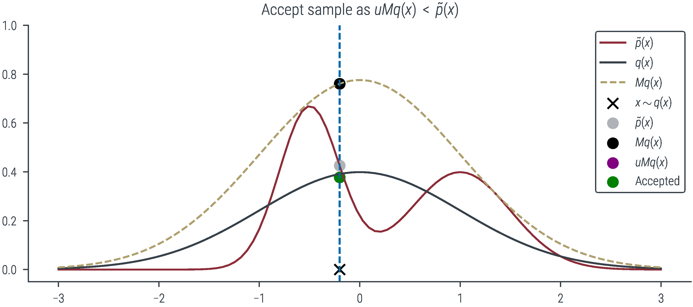
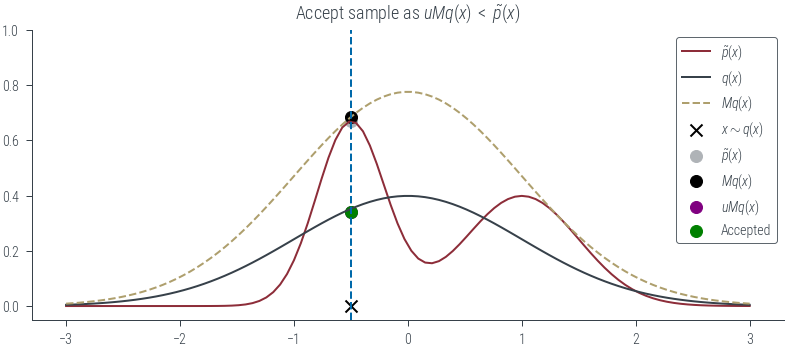
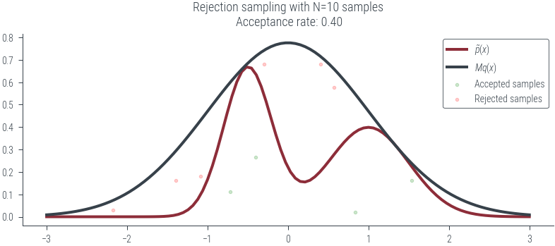
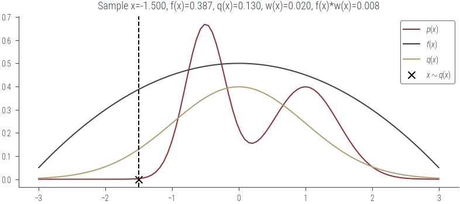

import torch
import numpy as np
import matplotlib.pyplot as plt
import pandas as pd
%matplotlib inline
# Retina display
%config InlineBackend.figure_format = 'retina'from tueplots import bundles
plt.rcParams.update(bundles.beamer_moml())
# Also add despine to the bundle using rcParams
plt.rcParams['axes.spines.right'] = False
plt.rcParams['axes.spines.top'] = False
# Increase font size to match Beamer template
plt.rcParams['font.size'] = 16
# Make background transparent
plt.rcParams['figure.facecolor'] = 'none'## Rejection sampling
import torch.distributions as D
mix = D.Categorical(torch.ones(2,))
comp = D.Normal(torch.tensor([-0.5, 1.0]), torch.tensor([0.3, 0.5]))
mog = D.MixtureSameFamily(mix, comp)comp.scaletensor([0.3000, 0.5000])# Plot the mizxture of Gaussians
xs = torch.linspace(-3, 3, 100)
plt.plot(xs, mog.log_prob(xs).exp())
# Take a proposal distribution q(x) = N(0, 1)
q = D.Normal(0, 1)# Let $M$ be a constant such that $M \geq \frac{p(x)}{q(x)} \forall x$.
M = torch.max(mog.log_prob(xs) - q.log_prob(xs)).exp()
Mtensor(1.9451)torch.argmax(mog.log_prob(xs) - q.log_prob(xs))tensor(72)xs[31]tensor(-1.1212)def plot_base():
# Plot the mixture of Gaussians
plt.legend()
plot_base()No artists with labels found to put in legend. Note that artists whose label start with an underscore are ignored when legend() is called with no argument.# Sample from the proposal distribution and accept or reject.
# Accepted shown in green, rejected shown in red.
def plot_sample(x, show_q = False, show_Mq = False, show_sample=False, show_vline = False,
show_px=False, show_Mqx=False, show_uMqx=False, show_accept=False):
xs = torch.linspace(-3, 3, 100)
plt.plot(xs, mog.log_prob(xs).exp(), label=r'$\tilde{p}(x)$', color='C0')
plt.title(r"Target distribution $\tilde{p}(x)$")
if show_q:
# Plot the proposal distribution
plt.plot(xs, q.log_prob(xs).exp(), label='$q(x)$', color='C1')
plt.title(r"Proposal distribution $q(x)$")
if show_Mq:
# Plot the scaled proposal distribution
plt.plot(xs, M * q.log_prob(xs).exp(), label='$Mq(x)$', color='C2', linestyle='--')
plt.title("Scaled proposal distribution Mq(x)")
if show_sample:
plt.scatter(x, 0,marker='x', color='k', label = r"$x\sim q(x)$")
plt.title("Sample from proposal distribution")
if show_vline:
plt.axvline(x, color='C3', linestyle='--')
plt.title("Sample from proposal distribution")
if show_px:
plt.scatter(x, mog.log_prob(x).exp(), color='C4', label=r"$\tilde{p}(x)$")
plt.title(r"Evaluate target distribution $\tilde{p}(x)$ at sample x")
if show_Mqx:
plt.scatter(x, M * q.log_prob(x).exp(), color='k', label=r"$Mq(x)$")
plt.title(r"Evaluate scaled proposal distribution $Mq(x)$ at sample x")
if show_uMqx:
torch.manual_seed(0)
u = torch.rand(1)
plt.scatter(x, u * M * q.log_prob(x).exp(), label=r"$uMq(x)$", color='purple')
plt.title(r"Draw a uniform u between 0 and 1 and evaluate $uMq(x)$ at sample x")
if show_accept:
if u * M * q.log_prob(x).exp() < mog.log_prob(x).exp():
plt.scatter(x, u * M * q.log_prob(x).exp(), label=r"Accepted", color='g')
plt.title(r"Accept sample as $uMq(x)$ $<$ $\tilde{p}(x)$")
else:
plt.scatter(x, u * M * q.log_prob(x).exp(), label=r"Rejected", color='r')
plt.title(r"Reject sample as $uMq(x)$ $>$ $\tilde{p}(x)$")
plt.ylim(-.05, 1.0)
plt.legend()
fn = f"../figures/sampling/rejection-sampling-{x:0.1f}-{show_q}-{show_Mq}-{show_sample}-{show_vline}-{show_px}-{show_Mqx}-{show_uMqx}-{show_accept}"
plt.savefig(fn + ".pdf", bbox_inches='tight')
plt.savefig(fn + ".png", bbox_inches='tight', dpi=600)plot_sample(torch.tensor(-1.0))findfont: Font family ['cursive'] not found. Falling back to DejaVu Sans.
findfont: Generic family 'cursive' not found because none of the following families were found: Apple Chancery, Textile, Zapf Chancery, Sand, Script MT, Felipa, Comic Neue, Comic Sans MS, cursiveplot_sample(torch.tensor(-1.0), show_q=True)plot_sample(torch.tensor(-1.0), show_q=True, show_Mq=True)plot_sample(torch.tensor(-1.0), show_q=True, show_Mq=True, show_sample=True)
plot_sample(torch.tensor(-1.0), show_q=True, show_Mq=True, show_sample=True, show_vline=True)plot_sample(torch.tensor(-1.0), show_q=True, show_Mq=True, show_sample=True, show_vline=True, show_px=True)plot_sample(torch.tensor(-1.0), show_q=True, show_Mq=True, show_sample=True, show_vline=True, show_px=True, show_Mqx=True)plot_sample(torch.tensor(-1.0), show_q=True, show_Mq=True, show_sample=True, show_vline=True, show_px=True, show_Mqx=True, show_uMqx=True)
plot_sample(torch.tensor(-1.0), show_q=True, show_Mq=True, show_sample=True, show_vline=True, show_px=True, show_Mqx=True, show_uMqx=True, show_accept=True)plot_sample(torch.tensor(-0.2), show_q=True, show_Mq=True, show_sample=True, show_vline=True, show_px=True, show_Mqx=True, show_uMqx=True, show_accept=True)# Create an animation out of the .png generated above
import os
import imageio
import glob
images = []
# Get all the pngs in the figures directory
fs = sorted(glob.glob('../figures/sampling/rejection-sampling*.png'))
for filename in fs:
ist = imageio.imread(filename)
images.append(ist)
# Print image size to make sure they are all the same size
print(ist.shape)
# Save with high resolution
imageio.mimsave('../figures/sampling/rejection-sampling.gif', images, duration=0.6)
# save as mp4
# os.system("ffmpeg -i figures/sampling/rejection-sampling.gif figures/sampling/rejection-sampling.mp4")
/tmp/ipykernel_678943/3473788105.py:10: DeprecationWarning: Starting with ImageIO v3 the behavior of this function will switch to that of iio.v3.imread. To keep the current behavior (and make this warning disappear) use `import imageio.v2 as imageio` or call `imageio.v2.imread` directly.
ist = imageio.imread(filename)(1456, 3275, 4)
(1456, 3275, 4)
(1456, 3275, 4)
(1456, 3275, 4)
(1456, 3275, 4)
(1456, 3275, 4)
(1456, 3275, 4)
(1456, 3275, 4)
(1456, 3275, 4)
(1456, 3275, 4)
(1456, 3275, 4)
(1456, 3275, 4)
(1456, 3275, 4)
(1456, 3275, 4)
plot_sample(torch.tensor(-0.5), show_q=True, show_Mq=True, show_sample=True, show_vline=True, show_px=True, show_Mqx=True, show_uMqx=True, show_accept=True)
N = 1000
def plot_N_samples(N=100, seed=0, plot_kde=False):
torch.manual_seed(seed)
# Now, run the algorithm for a few iterations and plot the results
samples_from_q = q.sample((N,))
# Evaluate the target distribution at the samples
pxs = mog.log_prob(samples_from_q).exp()
# Evaluate the scaled proposal distribution at the samples
Mqxs = M * q.log_prob(samples_from_q).exp()
# Draw a uniform u between 0 and 1
us = torch.rand(N)
# Accept or reject the samples
accepted = us * Mqxs < pxs
# Plot p, q, and Mq
plt.plot(xs, mog.log_prob(xs).exp(), label=r'$\tilde{p}(x)$', lw=2)
#plt.plot(xs, q.log_prob(xs).exp(), label='q(x)')
plt.plot(xs, M * q.log_prob(xs).exp(), label=r'$Mq(x)$', lw=2)
if not plot_kde:
# Plot the sample as red if it was rejected, and green if it was accepted, height is p(x)
#plt.scatter(samples_from_q, pxs, color='r', label='Rejected samples')
plt.scatter(samples_from_q[accepted], (us*Mqxs)[accepted], color='g', label='Accepted samples', alpha=0.2, marker='.', s=20)
plt.scatter(samples_from_q[~accepted], (us*Mqxs)[~accepted], color='r', label='Rejected samples', alpha=0.2, marker='.', s=20)
plt.legend()
if plot_kde:
import seaborn as sns
sns.kdeplot(samples_from_q[accepted].numpy(), color='g', label='Density of accepted samples', lw=2)
plt.legend()
plt.title(f"Rejection sampling with N={N} samples\n Acceptance rate: {accepted.float().mean().item():.2f}")
fn = f"../figures/sampling/rejection-sampling-N{N}-{plot_kde}.pdf"
plt.savefig(fn, bbox_inches='tight')
print(fn)
plot_N_samples(N=1000, seed=0)../figures/sampling/rejection-sampling-N1000-False.pdfplot_N_samples(N=1000, seed=0, plot_kde=True)../figures/sampling/rejection-sampling-N1000-True.pdfplot_N_samples(N=10, seed=0, plot_kde=True)../figures/sampling/rejection-sampling-N10-True.pdfplot_N_samples(N=10, seed=0, plot_kde=False)../figures/sampling/rejection-sampling-N10-False.pdf
plot_N_samples(N=10000, seed=0, plot_kde=True)../figures/sampling/rejection-sampling-N10000-True.pdfplot_N_samples(N=10000, seed=0, plot_kde=False)../figures/sampling/rejection-sampling-N10000-False.pdf# Gaussian p and q
sigma_p = 1.0
sigma_q = 1.1
DIM = 1
p = D.MultivariateNormal(torch.zeros(DIM), sigma_p**2 * torch.eye(DIM))
q = D.MultivariateNormal(torch.zeros(DIM), sigma_q**2 * torch.eye(DIM))pMultivariateNormal(loc: tensor([0.]), covariance_matrix: tensor([[1.]]))qMultivariateNormal(loc: tensor([0.]), covariance_matrix: tensor([[1.2100]]))# plot the distributions
xs = torch.linspace(-3, 3, 100).view(-1, 1)
plt.plot(xs, p.log_prob(xs).exp(), label=r'$\tilde{p}(x)$')
plt.plot(xs, q.log_prob(xs).exp(), label=r'$q(x)$')
plt.legend()
plt.savefig('../figures/sampling/rejection-sampling-gaussian-p-q.pdf', bbox_inches='tight')
# Compute the constant MM_emp = torch.max(p.log_prob(xs) - q.log_prob(xs)).exp()
M_emptensor(1.0999)M = sigma_q/sigma_p
M 1.1# Now, plot for varying D
Ms = {}
for DIM in [1, 2, 5, 10, 20, 50, 100]:
Ms[DIM] = (sigma_q/sigma_p)**DIMMs{1: 1.1,
2: 1.2100000000000002,
5: 1.6105100000000006,
10: 2.5937424601000023,
20: 6.727499949325611,
50: 117.39085287969579,
100: 13780.61233982238}import pandas as pd
pd.Series(Ms).plot(logy=True, marker='o')
plt.xlabel("Dimensionality")
plt.ylabel("M (log scale)")
plt.savefig('../figures/sampling/rejection-sampling-gaussian-p-q-M.pdf', bbox_inches='tight')import pandas as pd
new_series = 1/pd.Series(Ms)
new_series.plot(logy=True, marker='o')
plt.xlabel("Dimensionality")
plt.ylabel("Acceptance rate (log scale)")
plt.savefig('../figures/sampling/rejection-sampling-gaussian-p-q-acceptance.pdf', bbox_inches='tight')mogMixtureSameFamily(
Categorical(probs: torch.Size([2]), logits: torch.Size([2])),
Normal(loc: torch.Size([2]), scale: torch.Size([2])))# Plot the mizxture of Gaussians
xs = torch.linspace(-3, 3, 100)
plt.plot(xs, mog.log_prob(xs).exp(), label=r'$p(x)$', color='C0')
plt.legend()<matplotlib.legend.Legend at 0x7f555c8e1070># Let f(x) = x^2
def f(x):
return (10-x**2)/20.0plt.plot(xs, mog.log_prob(xs).exp(), label=r'$p(x)$', color='C0')
# Plot f(x)
plt.plot(xs, f(xs), label=r'$f(x)$', color='C1')
plt.legend()<matplotlib.legend.Legend at 0x7f555c9e5be0># Let q(x) = N(0, 1)
q = D.Normal(0, 1)
plt.plot(xs, mog.log_prob(xs).exp(), label=r'$p(x)$', color='C0')
# Plot f(x)
plt.plot(xs, f(xs), label=r'$f(x)$', color='C1')
# Plot q(x)
plt.plot(xs, q.log_prob(xs).exp(), label=r'$q(x)$', color='C2')
plt.legend()<matplotlib.legend.Legend at 0x7f555c9482b0># Get a sample from q(x) and evaluate w(x) = f(x)/q(x) and evaluate f(x) at the sample
x = q.sample()
def plot_sample(x):
w = mog.log_prob(x).exp() / q.log_prob(x).exp()
plt.plot(xs, mog.log_prob(xs).exp(), label=r'$p(x)$', color='C0')
# Plot f(x)
plt.plot(xs, f(xs), label=r'$f(x)$', color='C1')
# Plot q(x)
plt.plot(xs, q.log_prob(xs).exp(), label=r'$q(x)$', color='C2')
# Plot sample x
plt.scatter(x, 0, marker='x', color='k', label=r"$x\sim q(x)$")
# Draw vertical line at x
plt.axvline(x, color='k', linestyle='--')
# Put title containing sample x, f(x), q(x), w(x), f(x)*w(x)
plt.title(f"Sample x={x:0.3f}, f(x)={f(x):0.3f}, q(x)={q.log_prob(x).exp():0.3f}, w(x)={w:0.3f}, f(x)*w(x)={f(x)*w:0.3f}")
plt.legend()
# Case 1: p(x) and q(x) are comparable and high
plot_sample(torch.tensor(-0.9))# Case 2: p(x) is low and q(x) is high
# In case of rejection sampling, we would reject this sample
plot_sample(torch.tensor(-1.5))
# Case 3: p(x) is high and q(x) is low
# Rare sample that we would accept in rejection sampling so high weight
plot_sample(torch.tensor(-0.5))# Case 4: p(x) is low and q(x) is low
plot_sample(torch.tensor(2.5))plt.plot(xs, mog.log_prob(xs).exp(), label=r'$p(x)$', color='C0')
# Plot f(x)
plt.plot(xs, f(xs), label=r'$f(x)$', color='C1')
# Plot q(x)
plt.plot(xs, q.log_prob(xs).exp(), label=r'$q(x)$', color='C2')
# Plot the weight function w(x) = p(x)/q(x)
plt.plot(xs, mog.log_prob(xs).exp() / q.log_prob(xs).exp(), label=r'$w(x)$', color='C3')
plt.legend()<matplotlib.legend.Legend at 0x7f555c547850>